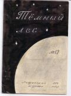

Тёмный лес
N12

СТИХИ 1973 Г.
СЕРАЯ ПЛАНЕТА
Есть в глуши бесконечной пространства
Позабытая Богом планетка.
Средь пустыни в мотеле от странствий
Отдыхают бродяги нередко.
Освещённые пламенем скудным
До утра космонавты болтали
В местном баре обычно безлюдном
О зарплате, о срывах в квартале.
В ожиданьи ракеты, зевая,
Говорили о серой планете,
Что летит, пустоту разрезая,
Неизменно в теченье столетий.
Существа поселились на шаре,
Неподобных себе истребили,
Прозябают средь пыли и гари,
Пыль жуют и не дышат без пыли.
Жизнь надежно устроена Богом:
Каждый прадеда путь повторяет,
Каждый место свое знает строго:
Этот строит, а тот разрушает.
Кто-то вечно торгует одёжей,
Иль часы у прохожих снимает,
Или ловит неблагонадёжных,
Или серость в стихах прославляет.
�Каждый шефа приказ выполняет,
Но и шеф - не вершина Вселенной.
Всякий шеф жить в покое желает,
И привычка - устав их священный.
Если едет дорогой телега,
Без труда повернуть ее можно,
Но останется жалким калекой,
Кто захочет свернуть в бездорожье.
Точно так же на серой планете:
Не фрондировать власть неприлично,
Но телега калечит до смерти -
Существа это знают отлично.
Есть и там свои наполеоны
(Кто без стадного чувства случится) -
На костёр или правит законы,
Если в серости не растворится.
То ли стадо вращает колёса,
То ли стадом фортуна играет -
все привязаны к ней крепким тросом,
Кто упал - тот в грязи помирает.
█
АРХИТЕКТУРНАЯ ПЕСНЯ
Каждый день я видел из окна
Неказистый двухэтажный дом,
Старенькую церковь без креста,
Только это было так давно.
Пятитонные грузовики
Поломали в скверике сирень,
А потом и церковку снесли,
Стал тогда наш двор еще серей.
Помню, зелень наполняла глаз,
Переулок наш смягчал печаль,
А сейчас везде угарный газ
И однообразия печать.
Ну а время, время шло да шло,
Был наш дом с лица земли снесён
(Дескать для культуры он ничто).
Я попал в седьмой микрорайон.
Отличается мой новый дом
Прилепившимся пивным ларьком.
[1972?]
█
ПРОЩАЙ, ТЮРЬМА МОЯ РОДНАЯ!
Я форму школьную сожгу,
Но ведь не в этом дело:
Ведь ржавь мне душу съела,
Её отчистить не смогу.
Наука школьная в дугу
Согнула нас умело.
(А где-то жили смело,
топтали травы на лугу).
Ура! Я скорлупу сломал,
Но ведь тюрьма нетленна,
Здесь кто-то новый чахнуть стал,
И так же давят стены.
Я поднимаю свой бокал
За неизбежность смены.
█
ВЕСЕННИЙ ВАЛЬС
Напрасно огорчает вас
Мушиный вальс, весенний вальс.
А у него особый такт!
Туда зигзаг, сюда зигзаг.
Несётся вихрем лёгкий рой,
В нём столько грации живой,
Движенье вниз, движенье вверх
И тонких крыльев фейерверк.
Вот кавалер, как пылко он
В шалунью ловкую влюблён,
И он шалунье этой мил,
Он с нею в вальсе закружил.
Ах, танцплощадка! Ах, мечта!
Они - счастливая чета,
Они вальсируют вдвоём
Под вашей люстрой над столом.
Настолько музыка нежна,
Что людям даже не слышна.
Уж больно звук у вальса чист,
Предпочитают люди твист.
Ах, этот вальс, весенний вальс,
Пусть только радует он вас,
А вы учитесь ремеслу
Встречать и праздновать весну.
█
* * *
Ты не знаешь, друг,
Что такое риск,
Что такое ринг,
Что такое ритм.
Ты узнаешь, друг,
Что такое Бог,
Что такое боль,
И рванёшься в бой.
Ты полюбишь риск,
Ты полюбишь ринг,
И чеканный ритм,
И сверканье рифм.
Ты не знаешь, друг,
Что такое друг,
Ты не знаешь, друг,
Что такое враг.
Ты узнаешь, друг,
В людях дичь и мрак,
В душах лёд и мраз,
В мыслях гниль и мразь.
Ты полюбишь, друг,
Это слово - ДРУГ.
Ты полюбишь, друг,
Это слово - ВРАГ.
█
* * *
С Нереем схож ты, друг мой любезнейший:
Как старец вещий, хитростью выскользнешь
Из рук любых, меняя образ,
Тем же оставшись в душе Нереем.
Скажу тебе я правду обидную,
А ты спокойно шуткой отшутишься
И, слов моих не замечая,
Будешь по-своему дело делать.
█
* * *
Жизнь в годах измерять? Что за глупая мода!
Нужно мерить в делах. Это в общем-то, просто:
Веневитинов жил целых двадцать три года,
А иные - лишь семьдесят, лишь девяносто.
█
МИНИАТЮРЫ █
ВИРШИ
ВЕРШИ КО "ПОЭТИЧЕСКОМУ СЛОВАРЮ" А.КВЯТКОВСКОГО
Сей книги мудрость зело несравненна!
И да вспоётся мною днесь Вселенна,
Аще токмо выспрь, ея прочиташе,
Верши начну я по оной слагаше.
ВОСХВАЛЕНИЕ КО СТИХАМ ФИОЛЕТОВОГО
Да приемлет жизнь то токмо, что ново.
Пусть живут стихи Фио-лето-вого.
То благонравно слуху лишь, что звучно,
Да раздадутся стихи сии кучно!
Да сокрушат тьму и козни порока,
Понеже мысль в тех всегда есть глубока.
Да обогатить вам, стихи читаше,
Эстетическо развитие ваше.
ВЕРШИ КО САМОМУ СЕБЕ
Аще стану я вершей том слагати,
Аще я свету, иже нам всем мати,
Мудрыя верши велигласно крикну,
Памятник себе из оных воздвигну.
ЭПИГРАММЫ
НА ЛАФАНСКИХ ПИИТОВ
█
Вы слышали? Невероятно!
Закапал дождик вверх, обратно!
Кораблик по лесу пошёл!
Орлица горлинкой запела!
Наш гений взялся делать дело
и... до конца его довёл!!!
█
Давно тебе, Жёлтый, не пишется,
И слава на прошлом зиждется.
Так выступи с речью шёлковой
И будешь лафанский Шолохов.
█
Сказал он, школу покидая,
Сходя от радости с ума:
"Прощай, тюрьма моя родная!
И - здравствуй, новая тюрьма."
█
Эх, Голубой, ты задавака,
Ведь ты живёшь не поэтично:
Ты метишь в Пушкины, однако
Учиться хочешь на отлично.
ФРАШКИ
* * *
- Шахматист я - просто клад.
- Верно, что ни шаг, то мат.
- А ещё я математик.
- Верно, что ни слово - матик.
* * *
Прогресс повсюду, мир в движеньи,
Но неразрывна с прошлым нить:
Наш Гамлет в страхе и сомненьи
Решает пить или не пить.
* * *
В значеньях слов умейте разбираться,
Умейте видеть между ними грань.
Собрание от слова собираться,
Но иногда оно от слова брань.
ОПРОВЕРЖЕНИЕ
Что вы безлики, почему-то
О вас твердят, забывши совесть.
По заду вас ни с кем не спутать.
У каждого своё лицо есть.
ПЕРЕСМЕШНИК
ФИОЛЕТОВООБРАЗНЫЕ СТИХИ
Напишу стихов штук сто
Мудро я и пылко.
Ручку взял и сел за стол
И чешу в затылке.
Небо в саже и в дыму,
Серенькое утро.
Дети топают в тюрьму,
Очень неуютно.
Не доволен я людьми,
Завтраком, обедом,
И гляжу на этот мир,
И покой неведом.
Скоро взрывы чёрных бомб.
Ох, изрядно ухнет!
Головешкой станет бор,
Лампочка потухнет,
И придёт гнилая смерть,
Постучится к людям.
По земле промчится смерч,
И людей не будет.
Тишина и благодать...
Впрочем, размечтался!
Я хотел ведь написать
О природе стансы.
Вянет пышная сирень,
Каплет дождик мутный.
И стихи мои сырей
Стали почему-то.
Сочиняю целый год
От избытка мысли.
Ах, избавь меня, господь,
От подобной миссии.
█
СОВРЕМЕННАЯ ВАКХИЧЕСКАЯ
Эх, мать вашу, мать вашу так!
Развлечься меня что-то тянет;
Пусть клёвая музыка грянет,
Врубите, врубите на полную маг!
Пусть грянут блатные запевки;
Пусть с нами вопят,
Хохочут под мат
Всю ночь институтские девки!
Подымем бутылки, за раз опрокинем,
И разума с музами нет и в помине!
Там, кажется, кто-то блюёт...
Дыми же, дыми, сигарета!
Пусть дым твой вонищу забьёт,
Чтоб мы веселиться могли до рассвета
И в щепки полы истолочь.
Пусть утра не будет, пусть тянется ночь!
█
ИЗ СОКРОВИЩНИЦЫ ЛАФАНСКОЙ ЛИТЕРАТУРЫ
В конце 1973 года в папках █ под руководством лафанского археолога █ были произведены раскопки на довольно большую глубину. В результате раскопок найдено много неизвестных или забытых стихотворений █ (1969-1970). Некоторые из них напечатаны ниже.
ТЁМНЫЙ ЛЕС
Нам говорят, что мы почти поэты,
Что научились мы стихи писать.
Да, легче, чем оттачивать сюжеты,
Слова одни с другими рифмовать.
ВЕРХОВНЫЙ СУДИЯ
- Физиономии коснувшийся кастет -
Незабываемое ощущенье,
Научит вежливости за мгновенье.
Он возникал и рыпаться пытался,
Я взял кастет - и кто же прав остался?
- Он говорил, я думал: обойдётся;
А может быть... Да, битым быть придётся.
Нет боли, странно в первое мгновенье,
Незабываемое ощущенье -
Физиономии коснувшийся кастет.
СОБРАНИЕ
Солнце катится к закату,
Больно на часы взглянуть.
Время - деньги, а дебаты
Нету наших сил заткнуть.
Сон с трудом одолеваю,
Два часа себя ругаю:
Почему я не ушёл?
В зале этом что нашёл?
Чем заинтересовался?
Я начальства побоялся.
ПУСТЫНЯ
Пустыня. Бледно-голубое небо
И серый, будто выцветший, песок.
Здесь нет воды, здесь не бывает снега,
Здесь злобствует, скучая, глупый рок.
Везде одно, куда б ни посмотрели,
Ни цвета нового, ни птицы, ни куста...
Лишь я брожу без Бога и без цели,
Тоска бескрайняя... Тоска и пустота.
█
Последнее изменение страницы 1 Jul 2019
ПОДЕЛИТЬСЯ: